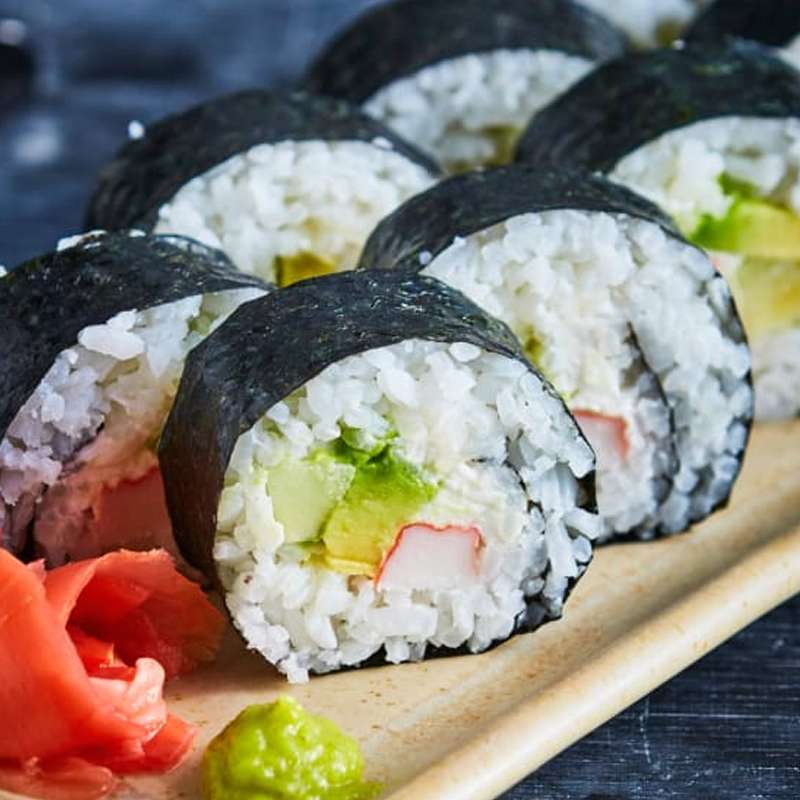

Sushi
El bocado más emblemático de Japón. Arroz avinagrado junto con pescados crudos o mariscos frescos, a veces acompañado de algas nori.
- Origen: Tokio
- Características: arroz, pescado crudo, mariscos, algas nori
- Curiosidad: el sushi comenzó como una técnica de conservación de alimentos.
